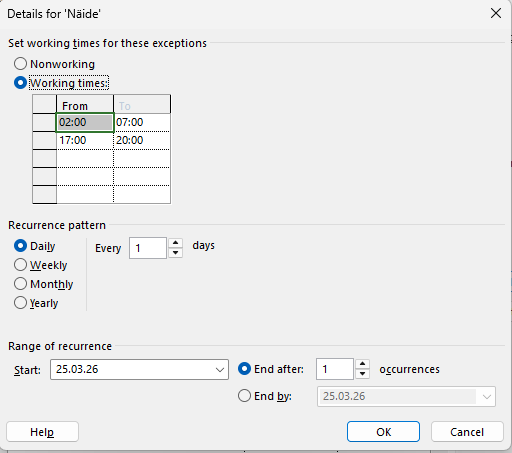
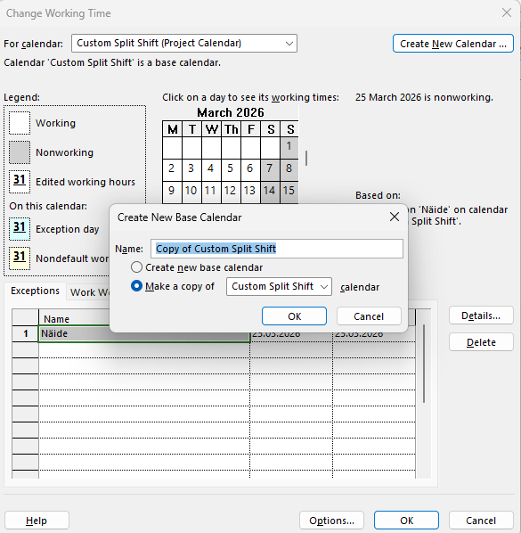
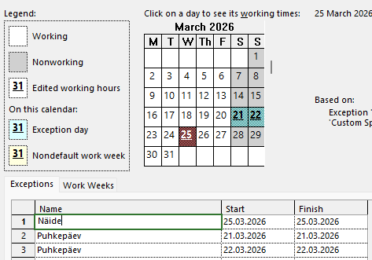
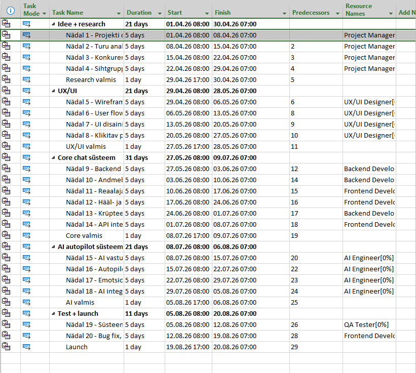

Eesmärk
Miks
kalender
loeb?
Ülesande fookus
Selle veebilehe eesmärk on selgitada, kuidas Microsoft Projectis luua uus kalender, muuta tööaegu ning kasutada seda projekti planeerimisel.
Kalender on projektijuhtimise alustala — see määrab, millistel päevadel ja kellaaegadel saab töö toimuda. Õige kalender teeb ajakava täpsemaks ning ülesannete kestused muutuvad realistlikumaks.
Samm-sammuline juhend
Ava Microsoft Project
Käivita Microsoft Project ja ava olemasolev projekt või loo uus projektifail. Seejärel vali menüüst Project.
Ava tööaja muutmise aken
Menüü Project alt vali Change Working Time. Selles aknas saab hallata kalendreid, muuta tööpäevi ja lisada erandeid.
Loo uus kalender
Vajuta Create New Calendar. Sisesta nimi ning vali, kas luua tühi kalender või koopia olemasolevast. Tavaliselt sobib standardkalendri kopeerimine aluseks.
Muuda tööpäevi ja -aegu
Vali nädalapäevad ja määra tööajad — näiteks 08:00–12:00 ja 13:00–17:00. Saab ka puhkepäevad märkida.
Lisa eripäevad ja puhkused
Vahekaardil Exceptions lisa riigipühad, ettevõtte kollektiivpuhkus või muud mittetööpäevad.
Rakenda kalender projektile
Ava Project Information ja vali loodud kalender väljalt Calendar. Nüüd arvutab MS Project ajakava sinu reeglite järgi.
Ekraanipildid




Kuidas kasutada projektis
Kui uus kalender on loodud, saab selle siduda projekti üldise ajakavaga. Selleks tuleb avada Project Information ning valida sobiv kalender.
Kalendrit saab määrata ka konkreetsetele ressurssidele või ülesannetele — näiteks kui osa töötajaid töötab vahetustega või ainult kindlatel päevadel.
Mõju ajakavale
- Kalender määrab, millal töö saab toimuda.
- Mittetööpäevadele ülesandeid ei planeerita.
- Muudetud tööajad mõjutavad algus- ja lõppkuupäevi.
- Puhkused võivad projekti kestust pikendada.
- Õige kalender tagab realistliku ajakava.
GitHub
Realistlik ajakava algab õigest kalendrist.
Microsoft Projecti kalender aitab määrata projekti tööaja reeglid. Uue kalendri loomine võimaldab kohandada tööpäevi, tööaegu ja erandeid vastavalt projekti vajadustele — ning muudab kogu planeerimise täpsemaks ja lihtsamaks.